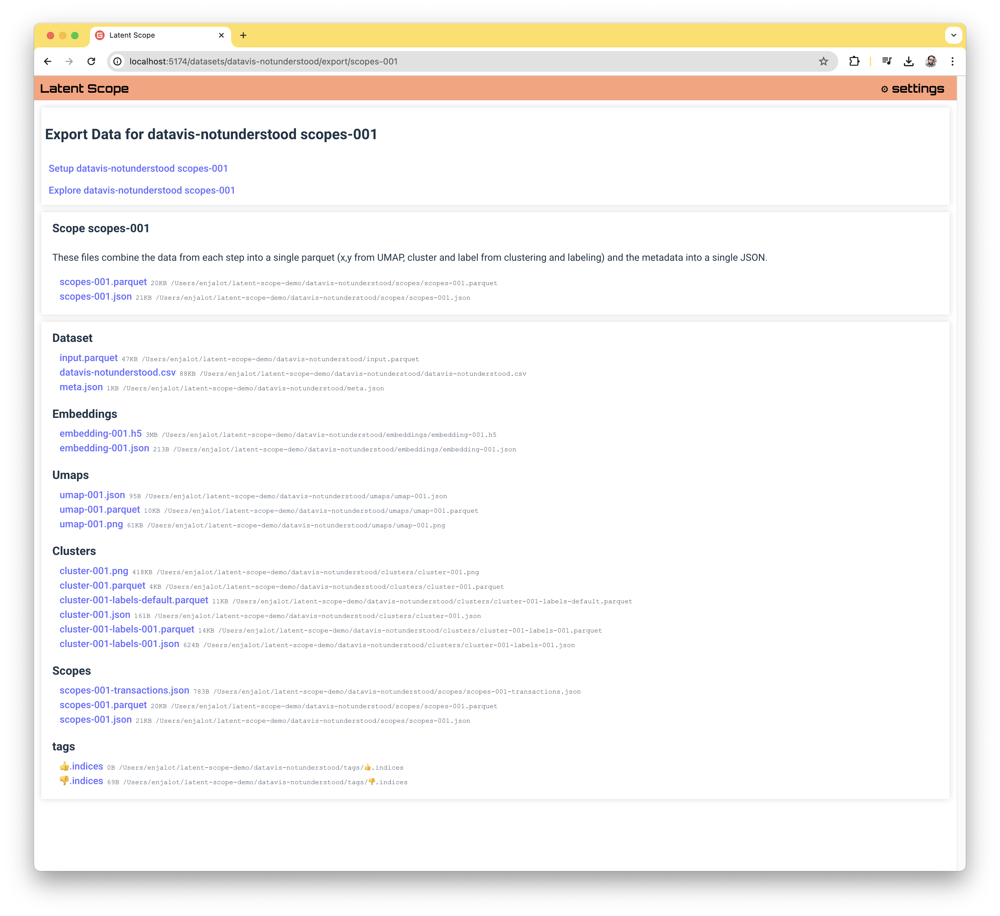

Exporting data
The goal of Latent Scope is to annotate your unstructured data with useful structured data. This guide will show you how to extract the data generated by Latent Scope and what it means.
Copy Data
Latent Scope is setup to store all of its data in flat files in the directory specified when you run ls-serve.
This means you can always access it from the file system of the computer where Latent Scope is running.
If you've somehow forgotten where you set it up, you can go to the settings page: https://localhost:5001/settings.
Download Data
You can also get a nice listing in the UI of all the files for a given scope by visiting it's export page.
Let's go through each of the headings in the Export page and give a brief overview of the data available for download.
Scope
The most useful data to get is the Scope data. The scopes-XXX.parquet file will contain a row for each row of your input data (minus any you deleted through the bulk actions).
The scopes-XXX-input.parquet has the input data joined to the scope, so you should find all the original columns you had when you ingested the data as well as the additional scope columns.
The columns of this parquet include x and y which are the UMAP coordinates, cluster which is the cluster number, raw_cluster which is the cluster number if we didn't automatically assign each point to the closest cluster, label which is the name given to the cluster via the labeling process and ls_index which is the index into the original data.
The scopes-XXX.json file contains the metadata from each step in the process, so all of the choices you made when setting up the scope including the parameters used are included.
It also has the metadata for each cluster in the cluster_labels_lookup which includes the hull indices that can be used to draw boundaries around the cluster (these indices are into the original input data, so if you deleted points you'd need to map via the ls_index column).
Dataset
When your input dataset is ingested, Latent Scope creates input.parquet regardless of the input format. If you did upload a file you will also see that original file listed. Additionally, the meta.json file has information about the dataset such as the column_metadata which includes the inferred data types of each column as well as if any of them are categorical.
Embeddings
Each time the embedding step is computed two files are created: embeddings-XXX.h5 and embeddings-XXX.json. The H5 file stores the embedding vectors. The format was chosen because it is portable, often used in scientific computing and allows dynamically adding to the array. This means that if the embedding process is somehow interrupted it can resume from where it last left off.
The JSON file contains the parameters chosen during the embedding step.
UMAPS
Each time you run through "Step 2. Project" in the process you create three umap-XXX files.
A parquet that stores the x,y coordinates for each row, a JSON that stores the parameters you chose and a PNG that serves as a thumbnail preview.
Clusters
Each time you run through "Step 3. Cluster" in the process you create three cluster-XXX files.
A parquet that stores the cluster index for each row, a JSON that stores the parameters you chose and a PNG that serves as a thumbnail preview.
When you run "Step 4. Auto-label" two new -labes-XXX files will be created.
A parquet that has a row for each cluster with its index, label and hull points. The JSON will store the parameters chosen.
Scopes
Scopes are covered above, except for the addition of scopes-XXX-transactions.json which stores a transaction object for every time a bulk action is performed on the scope.
This way you can see when and what data was deleted or re-categorized.
Tags
Each tag has a .indices file, which is really just a plain text file with an index on each row.